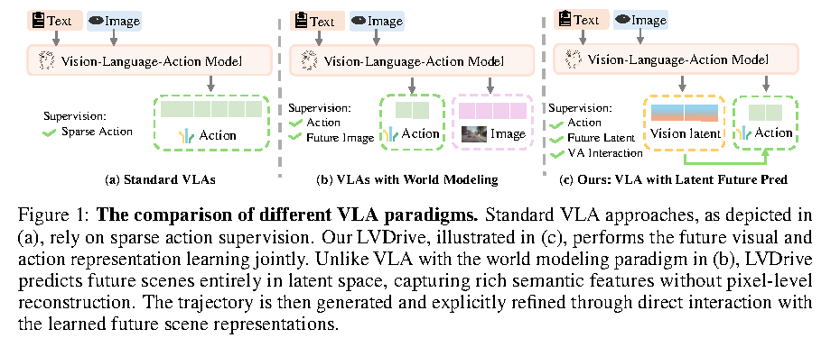
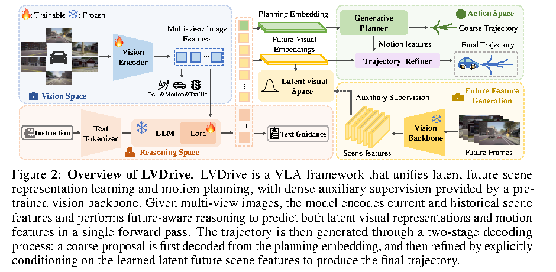
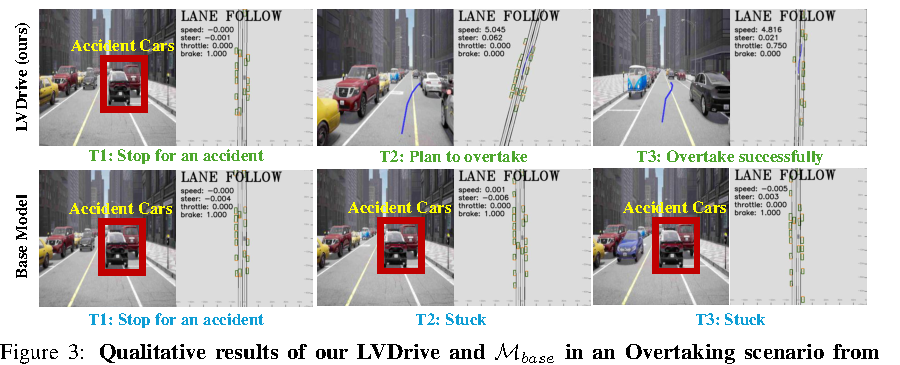

一句话总结
LVDrive 不直接重建未来 RGB 图像，而是在 latent space 中预测未来视觉语义表示； 这些 future visual embeddings 先隐式进入 planning token，再显式进入 trajectory refiner， 最终提升 closed-loop driving performance。
论文要解决的问题
标准 VLA 自动驾驶模型通常依赖稀疏 action labels。它们可以学到“未来轨迹应该是什么”， 但不一定被迫学清楚道路结构、动态目标、交通信号和未来场景演化。World-model 方法虽然引入未来视觉监督， 但如果目标是像素级未来图像重建，就容易把模型容量花在纹理细节上，并带来自回归生成的高推理成本。
- 监督稀疏：动作标签只给最终轨迹，不充分监督空间场景理解。
- 像素目标偏移：规划需要语义和动态关系，不需要 pixel-perfect future frames。
- 自回归太慢：逐 token 生成未来图像和动作不适合实时闭环驾驶。
- 未来特征未显式用于规划：很多方法把 future prediction 当辅助任务，而不是 trajectory condition。

核心方法

整体流程
多视角当前/历史图像 + 文本指令
↓
Vision Encoder + LLM/VLA reasoning
↓
future visual placeholder hidden states + planning token
↓
VISθ 解码 latent future visual features
↓
Generative Planner 生成 coarse trajectory
↓
Trajectory Refiner cross-attend future visual embeddings
↓
final trajectoryLVDrive 把“预测未来”从图像生成任务变成语义表示学习任务。 这样 future prediction 不再追求画面逼真，而是服务 motion planning。
关键机制拆解
1. `H_{t+j}` 是什么？
模型会在输出序列中放入一组未来视觉占位符 tokens：
<img_start> <img_0> ... <img_N> <img_end>。
每个 <img_i> 在 LLM 最后一层对应一个 hidden state。第 t+j
个未来帧的 N 个 hidden states 就组成 H_{t+j} ∈ R^{N × D}。
它不是 frozen Vision Backbone 的输出，而是模型基于当前/历史图像和指令推理出来的未来视觉表示。
训练时，H_{t+j} 经过 VISθ 得到 V_{t+j}，
再对齐真实未来帧经 frozen Vision Backbone 得到的 teacher feature。
2. `Lce` 和 `Lvis` 的区别
Lce 是格式监督，负责让 LLM 稳定输出正确的 placeholder token 序列；
Lvis 是语义监督，负责让这些 placeholder 对应的 hidden states 真正包含未来视觉语义。
Lce：教模型画出表格栏位
Lvis：教模型在栏位里填对内容3. 两阶段轨迹解码
- Coarse proposal：planning embedding 通过 VAE-based generative planner 生成粗轨迹。
- Future-aware refinement：trajectory refiner 让 ego motion queries 显式 attend 到 future visual embeddings。
主实验结论
LVDrive 在 Bench2Drive closed-loop evaluation 上取得最高 Driving Score 和 Success Rate。 注意它的 open-loop L2 不是全表最低，因此更准确的表述是：closed-loop planning 更强。
| Method | DS ↑ | SR ↑ | Avg. L2 ↓ |
|---|---|---|---|
| ORION | 77.74 | 54.62% | 0.68 |
| UniDrive-WM-AR | 79.22 | 56.36% | 0.64 |
| UniDrive-WM-AR+Diff | 79.31 | 56.42% | 0.63 |
| LVDrive | 80.71 | 58.26% | 0.63 |
Multi-Ability
Give Way 明显偏弱。论文解释是该场景常需要对后方 emergency vehicle 让行， 而 LVDrive 的 future prediction 主要面向 front-view，后方交互能力不足。
消融实验怎么读
| Variant | 核心变化 | DS ↑ | SR ↑ |
|---|---|---|---|
| Mbase | action-only baseline | 65.25 | 4/10 |
| Mvis | 加入 latent future prediction | 66.31 | 3/10 |
| Mone | one-stage direct fusion | 60.43 | 3/10 |
| LVDrive | two-stage decoding | 82.39 | 7/10 |
这个表是论文最重要的证据之一：latent future prediction 本身不是银弹。 简单多任务训练甚至会让 SR 降低；one-stage 直接融合会干扰 motion feature learning。 真正起作用的是 two-stage decoding：先稳定动作特征，再用未来语义精修。
| Vision Supervision | Feature Dim. | DS ↑ | SR ↑ |
|---|---|---|---|
| Internal Vision Enc. | 1024 | 65.42 | 4/10 |
| MoVQGAN | 4 | 59.91 | 3/10 |
| DINOv3-Large | 1024 | 71.72 | 5/10 |
| VQGAN-ImageNet | 256 | 82.39 | 7/10 |
teacher backbone 的选择很关键。VQGAN-ImageNet 的 256 维 latent 在这个框架中最合适； DINOv3 有提升但可能过于丰富，带来冗余信息。
定性案例

这个例子对应论文对 future-aware reasoning 的主张：模型不只是拟合专家轨迹， 而是在复杂交互场景中更好地理解未来风险和可行空间。
局限与疑问
- Front-view bias：Give Way 低分说明只预测前视未来场景会削弱后方交互。
- 训练成本高：论文使用 32 张 NVIDIA H20 96GB 训练 6 epochs。
- Dev10 消融规模小：只有 10 条路线，统计稳定性有限。
- Teacher 依赖强：不同 visual backbone 对结果影响很大。
- Open-loop L2 不是最优：不能泛化成所有指标全面 SOTA。
对普通课题组的启发
LVDrive 最值得借鉴的不是大算力，而是机制设计：
future prediction should be semantic, not pixel-perfect;
future representation should condition planning, not just supervise it;
visual-action alignment needs careful decoding design.- 冻结大模型，只训练 adapter、LoRA、trajectory head 或 refiner。
- 用 DINO、VQGAN、CLIP、EVA 等现成 backbone 做 teacher。
- 在传统 E2E planner 上加入轻量 future latent prediction。
- 用 Dev10、CARLA 子集或 Bench2Drive 小场景做机制验证。
- 研究多视角 future latent 对 Give Way、Merging、Overtaking 等技能的影响。